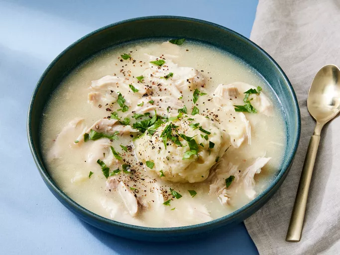

Chicken and Dumplings

Nothings scream "comfort food" quite as loudly as old-fashioned chicken and dumplings. This satisfying chicken and dumplings recipe is as good as it gets!
Old-Fashioned Chicken and Dumplings Ingredients
These are the simple ingredients you'll need to make this old-fashioned chicken and dumplings recipe:
- Chicken: This recipe calls for seven pounds of chicken pieces. It's a great way to use up leftovers!
- Stock: Use store-bought or homemade chicken stock.
- Vegetables: You'll need two onions and three celery stalks.
- Seasonings: This dish is simply seasoned with salt and ground black pepper.
- Milk: Milk adds richness to the dumplings and keeps them moist.
- Flour: All-purpose flour creates structure and helps bind the dumplings together.
- Baking powder: Baking powder is essential for the fluffiest dumplings.
- Baking powder: Baking powder is essential for the fluffiest dumplings.
- Parsley: Fresh parsley gives the dish a pop of color and flavor.
How to Make Old-Fashioned Chicken and Dumplings
You'll find the full, step-by-step recipe below — but here's a brief overview of what you can expect when you make traditional chicken and dumplings at home:
- Cook the chicken, salt, and vegetables in stock.
- Prepare the dumpling mixture according to the recipe below.
- Drop spoonfuls of the dumpling mixture onto the simmering chicken.
- Transfer the chicken and dumplings to a separate bowl.
- Use the remaining stock to make gravy.
- Return the chicken and dumplings to the pot. Garnish with parsley